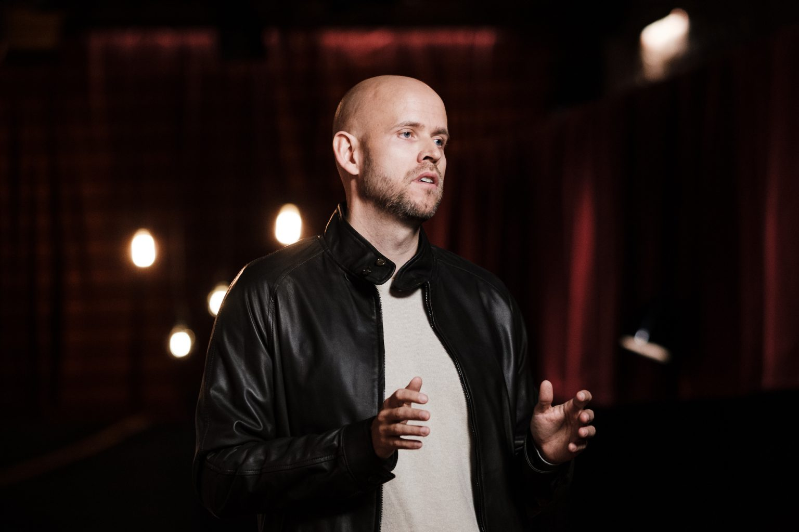

about spotify
Since its launch in 2008, Spotify has revolutionised music listening. Our move into podcasting brought innovation and a new generation of listeners to the medium. In 2022, we took the next leap, entering the fast-growing audiobook market—continuing to shape the future of audio.
Today, more listeners than ever can discover, manage and enjoy over 100 million tracks, nearly 7 million podcast titles, and 350,000 audiobooks a la carte on Spotify. We are the world’s most popular audio streaming subscription service with more than 696 million users, including 276 million subscribers in more than 180 markets.

a message from our ceo, daniel ek
Spotify Founder and CEO Daniel Ek Discusses the Economics of Music Streaming